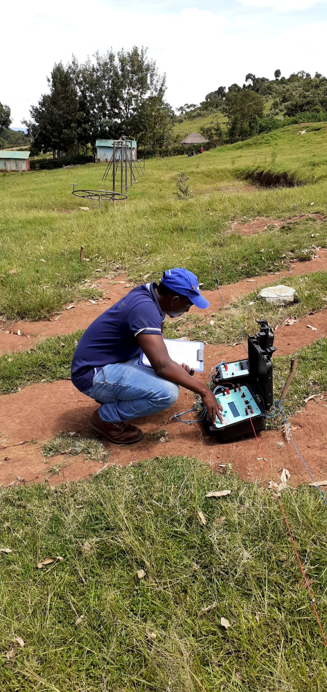
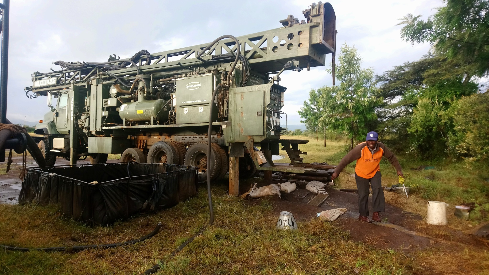
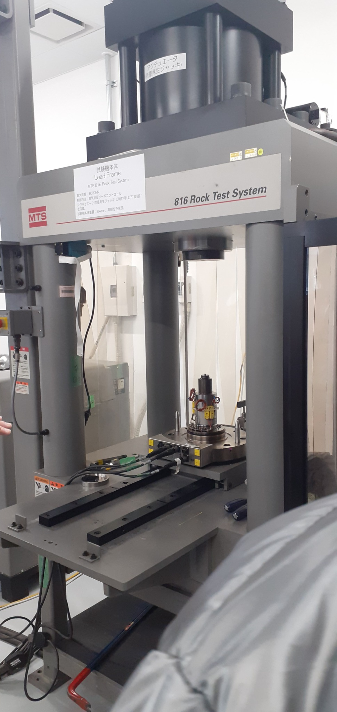
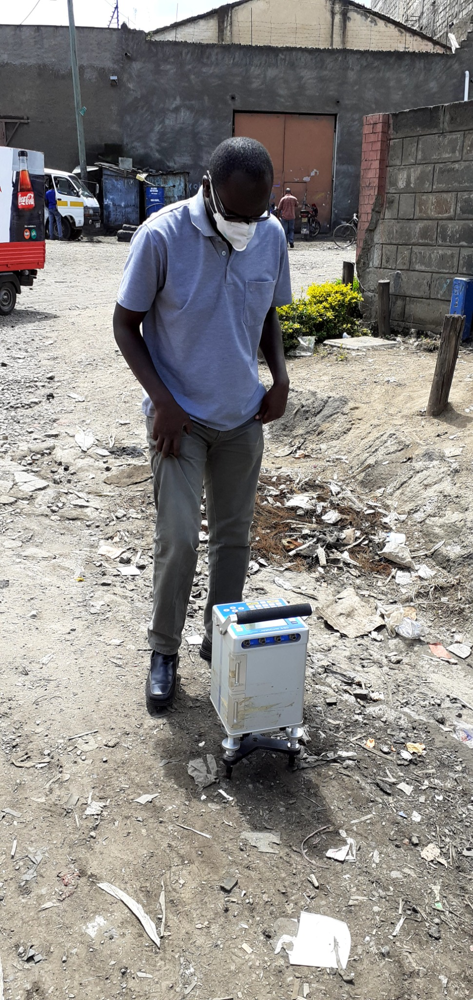
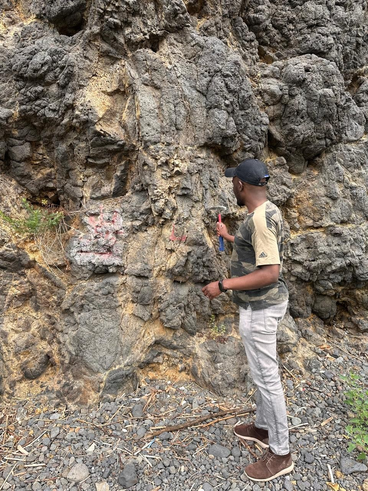
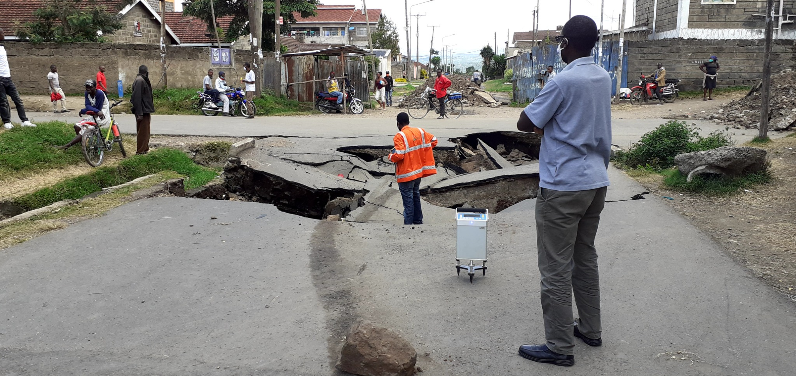

⌁
Borehole Geophysical Surveys
Downhole measurements that help characterize lithology, fractures, fluid-bearing zones and borehole conditions.
View service →GeoScan Engineering delivers integrated geophysical, geotechnical and soil investigation services that turn subsurface evidence into practical engineering decisions.

From field reconnaissance and geophysical acquisition to laboratory testing and engineering interpretation, we connect evidence across the investigation workflow.
Downhole measurements that help characterize lithology, fractures, fluid-bearing zones and borehole conditions.
View service →Ground investigations for buildings, roads and civil infrastructure, designed around project risks and design requirements.
View service →Laboratory characterization of soils to support classification, engineering assessment and reporting.
View service →Explore field and laboratory activities from drilling, geophysical investigation, geological inspection and engineering testing.





Tell us your location, project type, target depth and the decision the investigation needs to support.